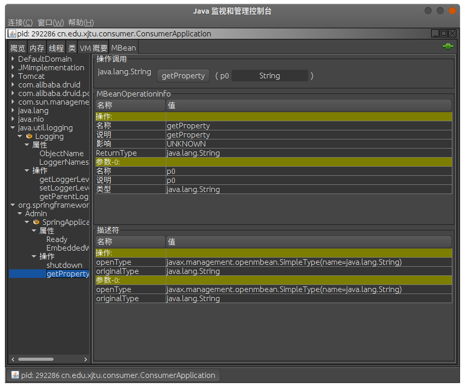

#JConsole
从 Java 5 开始引入了 JConsole，用来对 JVM 的内存，线程和类等监控，是基于JMX（java management extensions）的 GUI 性能监控工具。
#启动与连接
在安装的 jdk 的 bin 目录下，双击（Windows 系统）或者命令行（Linux 系统）运行。也可以将其添加到系统环境变量中，然后在任意目录下运行 jconsole 命令即可。
运行之后，可以在弹出的窗口中选择本地的 Java 进程进行监视，或者连接远程主机的进程。
#选项卡
#概览
可以看到堆内存的使用量、线程、类以及 CPU 占用率等信息。在图像上右键可以保存数据到 CSV 文件进行其他分析。
#内存
可以通过下拉框选择要查看的不同地方内存的使用情况以及不同 GC 进行垃圾回收的次数和时间，也可以点击右下角的图像进行选择。可以点击右上角的手动 GC 立即进行垃圾回收，观察内存分配与使用情况的变化。

#线程
左下角显示所有的活动线程（如果线程过多，可以在下面的过滤栏中输入字符串过滤出想要观察的线程）。点击某个线程会显示这个线程的名称、状态、阻塞和等待的次数、堆栈的信息。统计图显示线程数目的峰值（红线）和当前活动的线程数（蓝线）。点击检测死锁按钮可以快速定位死锁的线程。
#类
显示当前加载的类数、已经加载的类总数和已卸载的类总数。
#VM 概要
显示虚拟机的类型版本、线程和类的信息、操作系统的信息、内存的状况等。可以查看当前使用的垃圾收集器的信息以及 VM 的参数。
#MBean
描述一个可管理的资源，是一个 java 对象。一个 MBeanServer 的主要职责是在一个 JMX 代理中维护一个 MBean 的注册表。

#VisualVM
VisualVM 是一个功能强大的故障诊断和性能监视的可视化工具，可以看做是 JConsole 的升级版。它继承了多个 JDK 命令行工具，使用 VisulaVM 可用于显示虚拟机进程及进程的配置和环境信息（jps，jinfo），监视应用程序的 CPU，GC，堆，方法区及线程的信息（jstat，jstack）等。VisualVM 也作为 Java VisualVM 在 Oracle JDK 6~8 中分发，称为 jvisualvm，已在 Oracle JDK 9 中停止使用。后面的 Java 版本使用 VisualVM 需要下载独立的 VisualVM。
下载后，解压文件，在 bin 目录下有适合不同系统的可执行文件。
#与 IDEA 集成
首先在 IDEA 的插件市场中查找并安装 VisualVM Launcher，安装之后在 ToolBar 会出现 “Run with VisualVM” 和 “Debug with VisualVM” 的按钮，第一次点击时会出现配置窗口，将路径配置为 VisualVM 的可执行文件的路径。
之后再点击 “Run with VisualVM” 就在启动项目的同时启动 VisualVM 了。
选择本地的 Java 进程进行分析或者点击 Remote 添加远程主机。
#安装插件
点击菜单栏的 Tools -> Plugins 可以安装插件。
安装 Visual GC 可以查看内存各个区域的使用情况和垃圾回收情况。
#选项卡
#概述
显示 JVM 和 Java 的版本信息，JVM 的参数以及系统的属性信息等。
#监视
可以查看 CPU 信息、内存信息、类信息和线程信息，右上角可以执行手动 GC，还可以进行堆 Dump，在 Dump 文件里可以查看 GC Roots。
#线程
查看线程的状态：运行（Running）、休眠（Sleeping）、等待（Waiting）、驻留（Park）、监视（Monitor）。右上角可以线程 Dump，可以查看线程拥有的锁，定位死锁问题。
#抽样器
对 CPU 和 内存的使用情况进行分析。
#分析器
可以查看 JDBC 的连接，执行的 SQL 语句和耗费的时间。
#VisualVM GC
查看内存各个分区的占用情况以及垃圾回收的次数和时间。